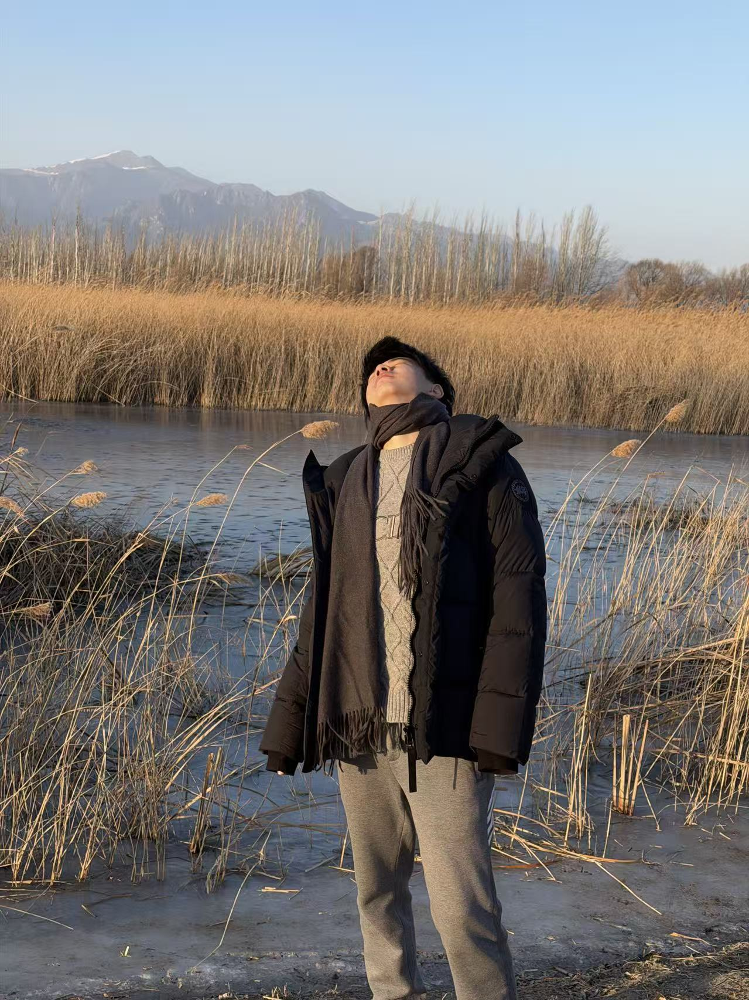
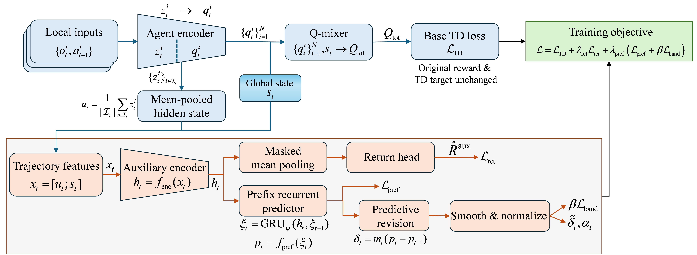
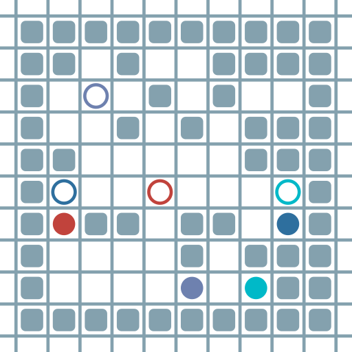
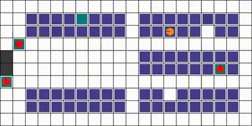

Peking University
Incoming · FallIncoming Master’s Student
Autonomous Robots Lab (ARL)
Advisor: Prof. Chang Liu

I am an undergraduate student in Robotics Engineering at Zhejiang University, advised by Prof. Qiuguo Zhu. I was fortunate to undertake a research internship at the Tsinghua Embodied AI Lab (TEA Lab), Institute for Interdisciplinary Information Sciences (IIIS), Tsinghua University, under the supervision of Prof. Huazhe Xu. I will join the Autonomous Robots Lab (ARL) at Peking University in the fall to pursue a master’s degree under the supervision of Prof. Chang Liu.
I am drawn to embodied intelligence and the possibility of bringing greater intelligence to robots—helping them understand their surroundings, learn from experience, and act effectively in the physical world.



Frontiers of Information Technology & Electronic Engineering (FITEE) Accepted
PPTA uses prefix-conditioned return prediction as an auxiliary learning signal to improve cooperative decision-making under sparse, delayed rewards, while retaining the environment reward and host learning targets.
Incoming Master’s Student
Autonomous Robots Lab (ARL)
Advisor: Prof. Chang Liu
Robotics Engineering
Advisor: Prof. Qiuguo Zhu
Research Intern
Research Intern
Advisor: Prof. Huazhe Xu
Team Leader, 3D Simulation
Based on the Minimal Light academic homepage template.